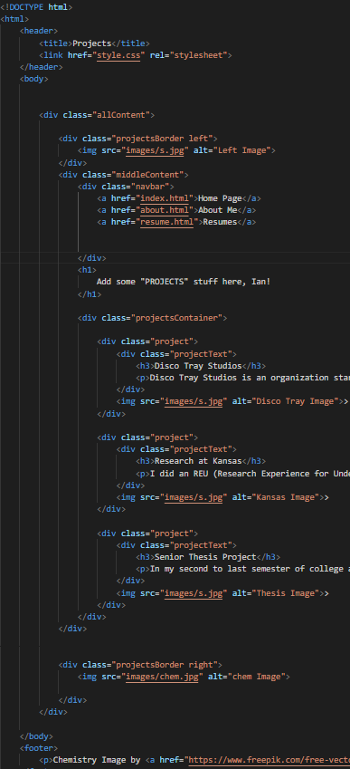

It Waves
It Waves is the current name for the game I'm working on. It is a 3D game built in Unity focused on knowledge based exploration, very similar to Outer Wilds. Below you can read on the different facets of development that I have worked on.
It Waves will be an open world "Metroidbrania" game. The current premise is that the player will have the goal of exploring and learning of an abandoned village on a small island on an alien world. They will learn more of the civilization, it's relationship to the world, and solve mysteries and puzzles to uncover the truth of what happened and what will happen.
The Loop
From a development perspective, the time loop in Outer Wilds was my favorite part. It did a fantastic job at creating a sense of urgency but without any serious pressure since the player could always try again. My loop isn't based on going back in time, but rather a cyclical orbit of the planet between a dual star system. After 4 rotations of the largest sun, the loop repeats itself.
The Suns
The suns are the core mechanic of the game. One sun is large, slow, and orange, while the other is small, fast, and blue. As the suns rise and set, they alter the gravity, temperature, and color of the world. These will be the core of most puzzles in the game and the cause of much of the problems the player will face.
The lighting in this game has been a nightmare. Fun fact, a lot of game engines really don't like the idea of having two main sources of lights. This game uses the built-in render pipeline because of it's ability to cast shadows from two directional lights, something (as far as I know) that the URP and HDRP pipelines do not. Hardly any art has been made for this game, but due to this the game will be simplistic in nature, colors, and shadows in order to optimize performance.
Unity is not great for volumetric fog, but I found a great tutorial for creating some using just a shader. I knew nothing about shaders when I wanted to start this tutorial, and it uses the URP, so I transitioned the game into that pipeline, created the whole volumetric fog, had it looking perfect, then realized there were no shadows for one of the suns... so I had to go back to built-in. I'm still very ignorant about shaders, so for now a full screen shader is seeming more difficult in the built-in pipeline and there aren't as many resources compared to creating a shader in the URP, so I have yet to attempt this again. Currently, I have a sort of volumetric fog by having a particle system with large 2D sprites of clouds surrounding the island. It's janky, but works for now. Another useful tutorial for that.
When I first came up with the idea of creating this game, one of the first puzzles I thought of was to create a maze of water that the player would need to turn into ice in order to make it over some parts, and back to water at other times. After a bit of research, I found out about Ray Marching and how it could be used to have spheres meld into one another. Perfect. I tried a few times to get this to work when I first started on the game, but it was awful, I had no idea what I was doing, and it was a total failure, and I didn't even try for like a year. When I was learning about shaders for the volumetric fog, this tutorial brought me back to Ray Marching and with a slightly better idea of shaders I decided to give it a go. 90% of the struggle was starting as I kept jumping back and forth between a full screen shader or a shader applied to a plane. I couldn't get full screen to work properly still, and after a lot of trial and error (don't forget, new to shaders still), I finally figured out how to properly find the direction for the camera and pixel on the plane (hint: its so simple, but I was caught up on uvs still). Easily the best/worst part of working on this shader was debugging, since I had to just convert my value to a color and interpret it in some way. Once I got a working plane with Ray Marching, setting it up was fairly easy (see this blog for a fantastic guide). I currently use a collection of sphere gameobjects to keep track of position, collision, and fixed joints (to connect for freezing). I did initially run into a headache with two suns and their lighting but a quick fix to solve that rendering issue is that all the water maze puzzles will be indoors with no window so I can easily input the location and color of the rooms light source. Today, 09JUN2025, I finally got a decent demo of the water freezing in the puzzle (if you have trouble with fixed joints exploding, freeze the rotation of the gameobjects) and will be moving on to a different part of the game
My goal is to update this page at least once a week, preferably after every session, for an update on the trials and successes I face. Now that the basic demo for the water puzzle is complete, I think I will work on finalzing the map of the world and actually having a rough model in Unity so the game feels much more fleshed out and less like a "maybe" game.